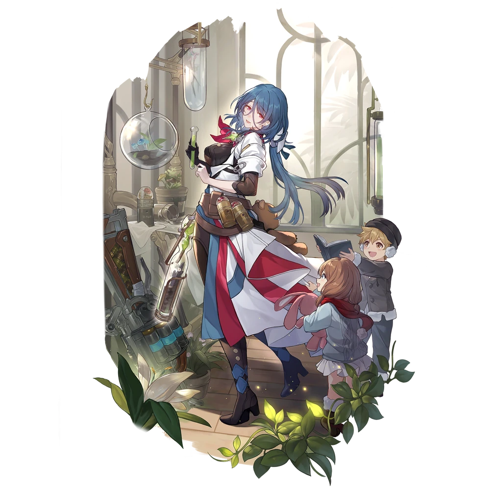

| Nome | Natasha |
|---|---|
| Elemento | Fisico | Raridade | ✦ ✦ ✦ ✦ |
| Caminho | A Abundância |
| Sexo | Fêmea |
| Especie | Humano |
| Facção | Belobog Fogo-Vivo | Mundo | Jarilo-VI | Como obter | Lying in Rust Qualquer Warp Banner | Data de Lançamento | 2023-04-26 | Adicionado pela primeira vez | Versão 0.6.0 |
Ascensões e estatísticas
| Fase de Ascensão | Level | Base HP | Base ATK | Base DEF | Base SPD |
|---|---|---|---|---|---|
| 0✦ | 1/20 | 158 | 64 | 69 | 98 |
| 20/20 | 308 | 126 | 134 | 98 | |
| 1✦ | 20/30 | 372 | 152 | 162 | 98 |
| 30/30 | 451 | 184 | 196 | 98 | |
| 2✦ | 30/40 | 514 | 210 | 224 | 98 |
| 40/40 | 594 | 243 | 258 | 98 | |
| 3✦ | 40/50 | 657 | 268 | 286 | 98 |
| 50/50 | 736 | 301 | 320 | 98 | |
| 4✦ | 50/60 | 799 | 327 | 327 | 98 |
| 60/60 | 879 | 359 | 382 | 98 | |
| 5✦ | 60/70 | 942 | 385 | 410 | 98 |
| 70/70 | 1,021 | 417 | 445 | 98 | |
| 6✦ | 70/80 | 1,085 | 443 | 472 | 98 |
| 80/80 | 1,164 | 476 | 507 | 98 |
| Nível | Custo de Evolução | Materiais de Ascensão do Personagem | Materiais Necessários |
|---|---|---|---|
| 0 → 1 ✦ |  3,200 3,200 |
 4 4 |
|
| 1 → 2 ✦ | 6,400 |
8 |
|
| 2 → 3 ✦ | 12,800 |
 2 2 |
 5 5 |
| 3 → 4 ✦ | 32,000 |
5 |
8 |
| 4 → 5 ✦ | 64,400 |
15 |
 5 5 |
| 5 → 6 ✦ | 128,000 |
28 |
7 |
Habilidades de combate
| Icone | Tipo | Nome | Descrição | Marcação | Energia | Resistência DMG |
|---|---|---|---|---|---|---|
| ATK básico | Atrás da Bondade | Causa DANO Físico igual a 50%–130% do ATK de Natasha a um único inimigo. | Alvo único | Geração: 20 | 30 | |
 |
Skill | Ame, Cure e Escolha | Restaura um único aliado por 7%–12,25% do HP máximo de Natasha mais 70–358,75 . Restaura o aliado por mais 4,8%–8,4% do HP máximo de Natasha mais 48–246 no início de cada turno por 2 turno(s). | Restaurar | Geração: 30 | |
| Ultimate | Presente de Renascimento | Cura todos os aliados em 9,2%–16,1% do HP máximo de Natasha mais 92–471,5 . | Restaurar | Custo: 90 Geração: 5 | ||
| Talento | Inervação | Ao curar aliados com porcentagem de HP de 30% ou menos, aumenta a cura de saída de Natasha em 25%–62,5% . Este efeito também funciona na cura contínua. | Melhorar | |||
| Técnica | Pesquisa de Hipnose | Imediatamente ataca o inimigo. Depois de entrar na batalha, causa DANO Físico igual a 80% do ATK de Natasha a um inimigo aleatório, com 100% de chance base de enfraquecer todos os inimigos. Enquanto enfraquecidos, os inimigos causam 30% menos DANO aos aliados por 1 turno(s). |
Eidolons
| Icone | Nome da habilidade | Nivel | Descrição |
|---|---|---|---|
| Especialização em Farmacologia | 1 | Depois de ser atacado, se a porcentagem de HP atual for de 30% ou menos, cura a si mesmo 1 vez para restaurar o HP em uma quantidade igual a 15% do HP máximo mais 400. Este efeito só pode ser acionado 1 vez por batalha. | |
| Pesquisa Clinica | 2 | Quando Natasha usar seu Ultimate, conceda cura contínua por 1 turno(s) a todos os aliados cujo HP esteja em 30% ou menos. E no início do turno, seu HP é restaurado em uma quantidade igual a 6% do HP máximo de Natasha mais 160. | |
| A Cura Certa | 3 | Habilidade Nv. +2, até um máximo de Lv. 15. ATK Básico Lv. +1, até um máximo de Lv. 10. | |
| Cura Milagrosa | 4 | Após ser atacado, regenera 5 energias extras. | |
 |
Tratamento preventivo | 5 | Nível final +2, até um máximo de Lv. 15. Talento Nv. +2, até um máximo de Lv. 15. |
| Graça do Médico | 6 | O ATK básico de Natasha causa DMG físico adicional igual a 40% de seu HP máximo. |
Traços
| Custo Total (1 → 6 para rastreamento de ATK básico) | ||||||
|---|---|---|---|---|---|---|
| 192.000 |
4 |
5 |
5 |
2 | 6 |  8 8 |
| Custo total (1 → 10 para um rastreamento) | ||||||||
|---|---|---|---|---|---|---|---|---|
| 522.000 |
6 |
10 |
5 |
2 | 12 | 23 |
.webp) 3 3 |
 1 1 |